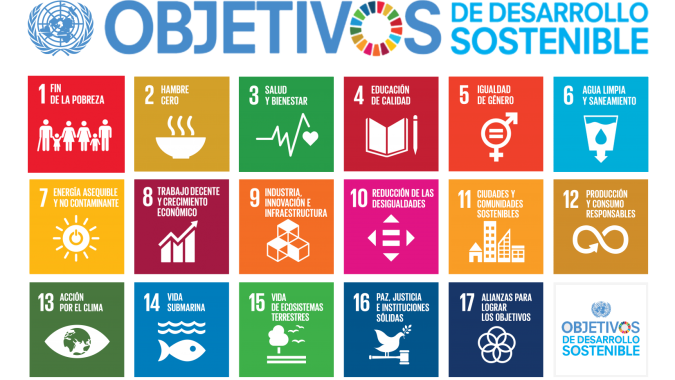
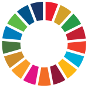
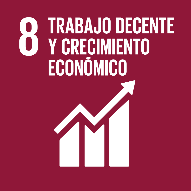
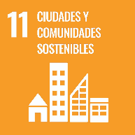
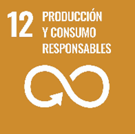
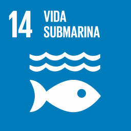
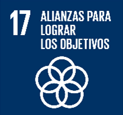

Los Objetivos de Desarrollo Sostenible (ODS), también conocidos como Objetivos Globales, fueron adoptados por las Naciones Unidas en 2015 como un llamamiento universal para poner fin a la pobreza, proteger el planeta y garantizar que para el 2030 todas las personas disfruten de paz y prosperidad. (PNUD)
Los ODS, Objetivos Globales o también conocida como la Agenda 2030, comprende 17 Objetivos, 169 metas y 232 indicadores de cumplimiento, los 17 objetivos de desarrollo sostenible están focalizados en crear sociedades más humanas, personas más conscientes de sus acciones en el medio ambiente y empresas con responsabilidad social, donde inciden las acciones empresariales en términos de producción, condiciones de trabajo, igualdad de oportunidades y compromiso con el medio ambiente.

YoReciclosv tiene relación con los siguientes Objetivos de Desarrollo Sostenible (ODS), con el 8, 11, 12, 14 y 17.

Según en el sitio oficial de las Naciones Unidas se desglosan los objetivos en metas e indicadores, YoReciclosv contribuye de la siguiente manera con base a las metas e indicadores de los objetivos siguientes:

OBJETIVO 8. Promover el crecimiento económico sostenido, inclusivo y sostenible, el empleo pleno y productivo y el trabajo decente para todos.
Meta 8.2: Lograr niveles más elevados de productividad económica mediante la diversificación, la modernización tecnológica y la innovación, entre otras cosas centrándose en los sectores con gran valor añadido y un uso intensivo de la mano de obra.

OBJETIVO 11. Lograr que las ciudades y los asentamientos humanos sean inclusivos, seguros, resilientes y sostenibles.
Meta 11.6: Reducir el impacto ambiental negativo per cápita de las ciudades, incluso prestando especial atención a la calidad del aire y la gestión de los desechos municipales y de otro tipo.

OBJETIVO 12. Garantizar modalidades de consumo y producción sostenibles.
Meta 12.5: De aquí a 2030, reducir considerablemente la generación de desechos mediante actividades de prevención, reducción, reciclado y reutilización.

OBJETIVO 14. Conservar y utilizar sosteniblemente los océanos, los mares y los recursos marinos para el desarrollo sostenible.
Meta 14.1: Prevenir y reducir significativamente la contaminación marina de todo tipo, en particular la producida por actividades realizadas en tierra, incluidos los detritos marinos y la polución por nutrientes.

OBJETIVO 17. Fortalecer los medios de implementación y revitalizar la Alianza Mundial para el Desarrollo Sostenible.
Meta 17.7: Promover el desarrollo de tecnologías ecológicamente racionales y su transferencia, divulgación y difusión a los países en desarrollo en condiciones favorables, incluso en condiciones concesionarias y preferenciales, según lo convenido de mutuo acuerdo.